יש לך חצי יום חופש בוא נבחר את החבילה המושלמת
יש לך חצי יום חופש בוא נבחר את החבילה המושלמת
מיקום הפעילות
גילאים להם מתאימה הפעילות
משך זמן משוער לפעילות
עונה מתאימה
עלות משוערת של הפעילות
האם נגיש לכיסא גלגלים
מקורות לתמונות המופיעות באתר
להלן רשימה של כל התמונות המופיעות באתר והמקורות מהן התמונות נלקחו, כולל קישורים.
תמונות עמוד הבית
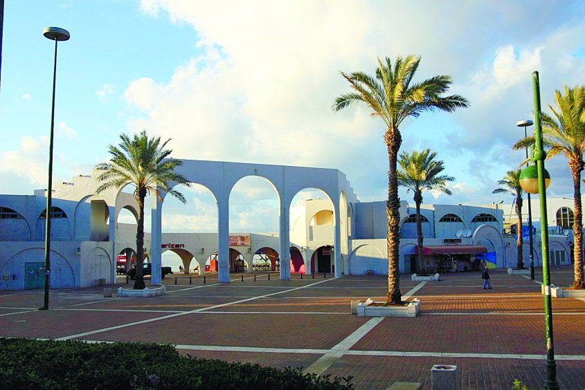תמונת טיילת חוף הים באשדוד מתוך אתר כאן דרום התמונה צולמה על ידי פבל

תמונת מוזיאון תל אביב מתוך אתר מוזיאון תל אביב לא מצוין על ידי מי צולמה התמונה
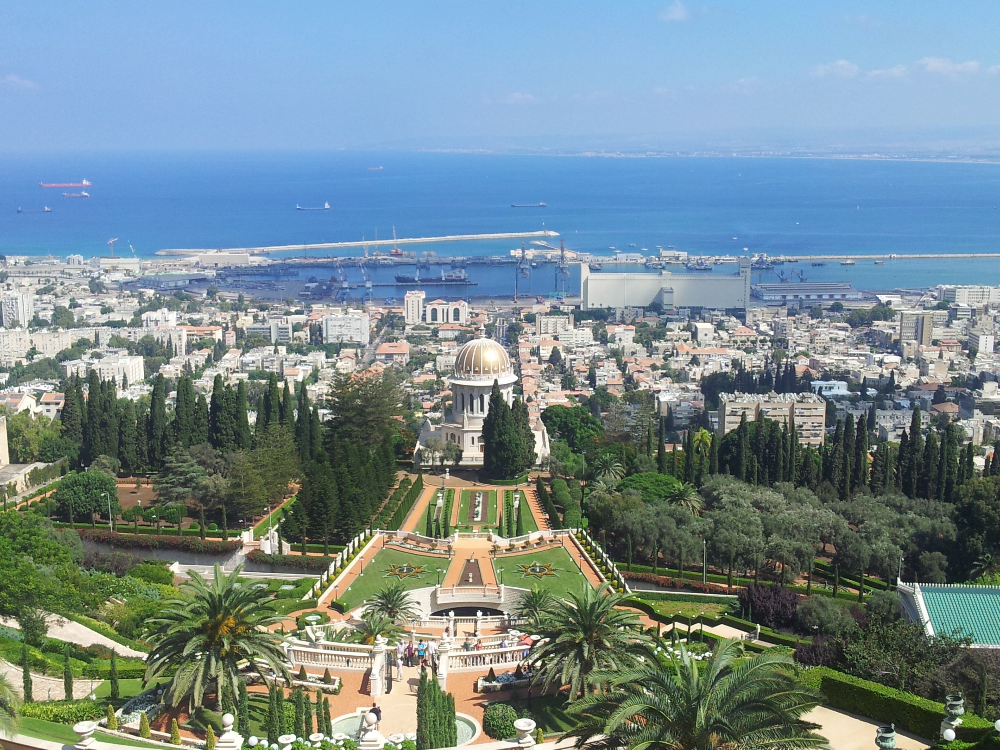תמונת הגנים הבאהים מתוך אתר שיחה מקומית התמונה צולמה על ידי Josh Evnin
תמונות עמודי הניווט

תמונת חלות בבני ברק מתוך אתר MAKO התמונה צולמה על ידי נמרוד סונדרס

תמונת חמין בבני ברק מתוך אתר OnLife לא מצוין על ידי מי צולמה התמונה

תמונת קוגל בבני ברק מתוך אתר פיקיוויקי התמונה צולמה ע"י ד" ר אבישי טייכר

תמונת שוק מחנה יהודה מתוך אתר כל העיר ירושלים התמונה צולמה על ידי ארנון בוסאני

תמונת ממתקים בשוק מחנה יהודה מתוך אתר פיקיוויקי התמונה צולמה על ידי לליב גל

תמונת תבלינים בשוק מחנה יהודה מתוך אתר פיקיוויקי התמונה צולמה על ידי לליב גל

תמונת מאפים בשוק נמל תל אביב מתוך עמוד האינסטגרם fika_tlv לא מצוין על ידי מי צולמה התמונה

תמונת ירקות בשוק נמל תל אביב מתוך עמוד האינסטגרם shukhanamaltlv התמונה צולמה על ידי אלכסי מיכלאביץ

תמונת בירה בשוק נמל תל אביב מתוך עמוד האינסטגרם israelidelicious/ לא מצוין על ידי מי צולמה התמונה

תמונת גשר בחוף דור מתוך הבלוג פיקיוויקי התמונה צולמה על ידי אריה טטנבאום

תמונת חוף דור מתוך עמוד האינסטגרם של morlev לא מצוין על ידי מי צולמה התמונה

תמונת פריחה בחוף דור עמוד האינסטגרם של yorampomer לא מצוין על ידי מי צולמה התמונה

תמונת חוף הנכים הרצליה מתוך אתר YNET התמונה צולמה על ידי אורית פניני

תמונת מעליות המוביליות אל החוף מתוך אתר פיקיוויקי התמונה צולמה על ידי יהודית גרעין-כל

תמונת כיסא גלגלים בחוף הים מתוך אתר WAY-2-GO לא מצוין על ידי מי צולמה התמונה

תמונת ארוחת בוקר בחוף מציצים בתל אביב מתוך עמוד האינסטגרם der_ryffel לא מצוין על ידי מי צולמה התמונה

תמונת חוף מציצים בתל אביב מתוך עמוד האינסטגרם heloalaplaya לא מצוין על ידי מי צולמה התמונה

תמונת בירה בחוף מציצים בתל אביב מתוך עמוד האינסטגרם nofartuvia לא מצוין על ידי מי צולמה התמונה

תמונת אומגה באריאל מתוך אתר המרכז הארצי לפיתוח מנהיגות באריאל לא מצוין על ידי מי צולמה התמונה

תמונת עמוד הטיפוס באריאל מתוך אתר המרכז הארצי לפיתוח מנהיגות באריאל לא מצוין על ידי מי צולמה התמונה

תמונת קיר הטיפוס באריאל מתוך אתר המרכז הארצי לפיתוח מנהיגות באריאל לא מצוין על ידי מי צולמה התמונה

תמונת אנשים מחליקים על הקרח הסרטון של דורון פוקס

תמונת זירת החלקה על הקרח מתוך אתר ארגון גימלאי בנק דיסקטנט התמונה צולמה על ידי רן בירן

תמונת מחליקים להחלקה על הקרח מתוך אתר iskate - עיר השעשועים לא מצוין על ידי מי צולמה התמונה
תמונות עמודי התוכן
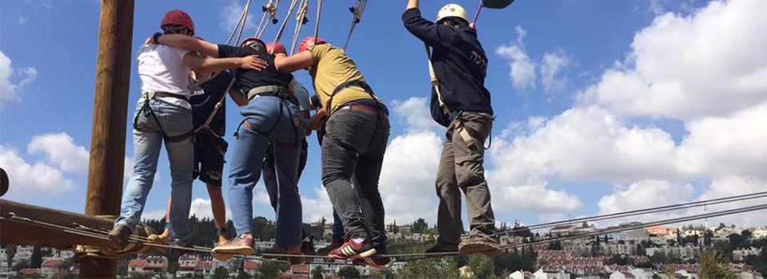תמונת טיפוס בגובה באריאל מתוך עמוד הפייסבוק של המרכז הארצי לפיתוח מנהיגות באריאל לא מצוין על ידי מי צולמה התמונה
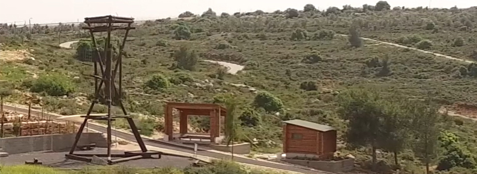תמונת עמוד הטיפוס באריאל מתוך עמוד הפייסבוק של המרכז הארצי לפיתוח מנהיגות באריאל לא מצוין על ידי מי צולמה התמונה

תמונת קיר הטיפוס באריאל מתוך אתר המרכז הארצי לפיתוח מנהיגות באריאל לא מצוין על ידי מי צולמה התמונה

בשרים במסעדת שרולה באריאל מתוך אתר שרולה לא מצוין על ידי מי צולמה התמונה
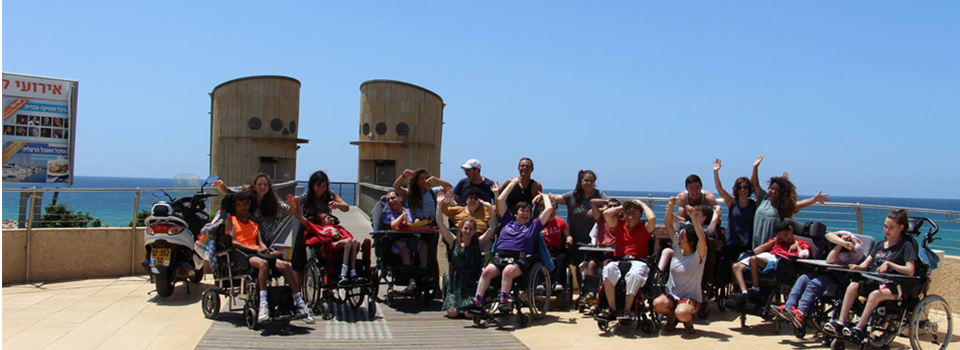תמונת בעלי צריכים מיוחדים בחוף מתוך עמוד הפייסבוק של בית נועם לא מצוין על ידי מי התמונה צולמה
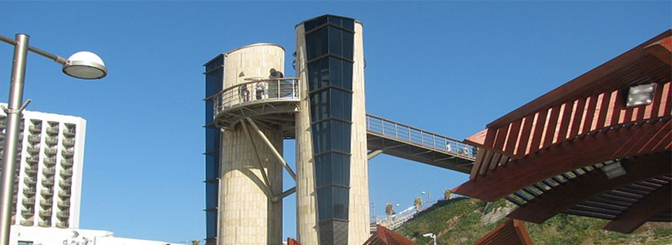תמונת מעליות המוביליות אל החוף מתוך אתר פיקיוויקי התמונה צולמה על ידי יהודית גרעין-כל
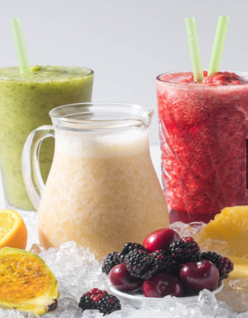תמונת שייקים מתוך אתר fresh לא מצוין על ידי מי צולמה התמונה

תמונת שקיעה בחוף הנכים בהרצליה מתוך אתר פיקיוויקי התמונה צולמה על ידי יהודית גרעין-כל
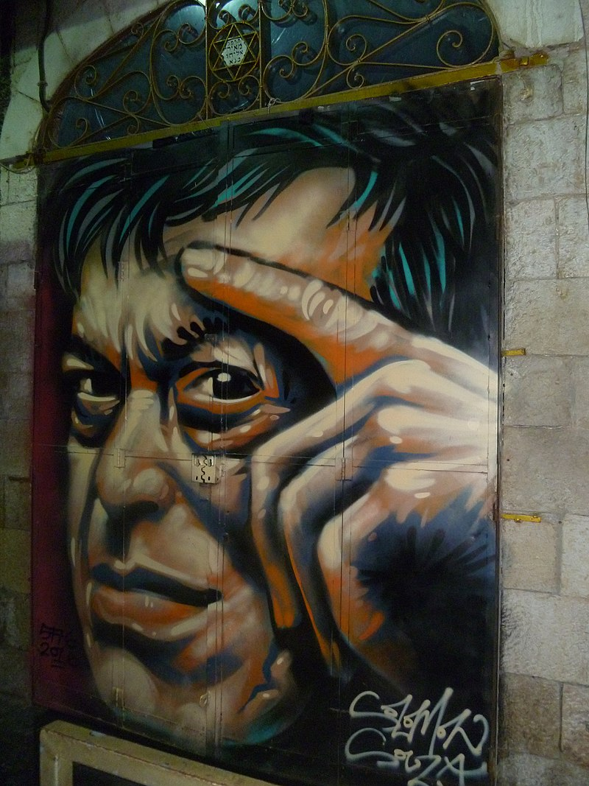תמונת גרפיטי בשוק מחנה יהודה מתוך אתר פיקיוויקי התמונה צולמה על ידי לליב גל
תמונת חצ'פורי בשוק מחנה יהודה מתוך אתר החצפוריה לא מצוין על ידי מי צולמה התמונה
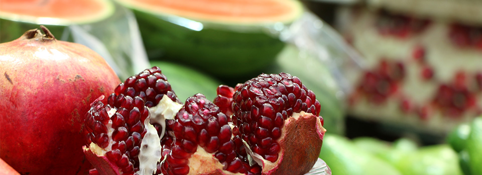 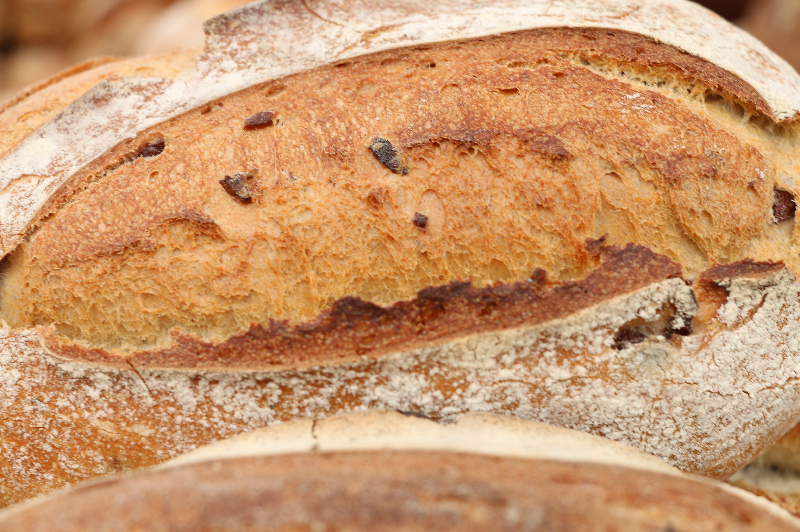 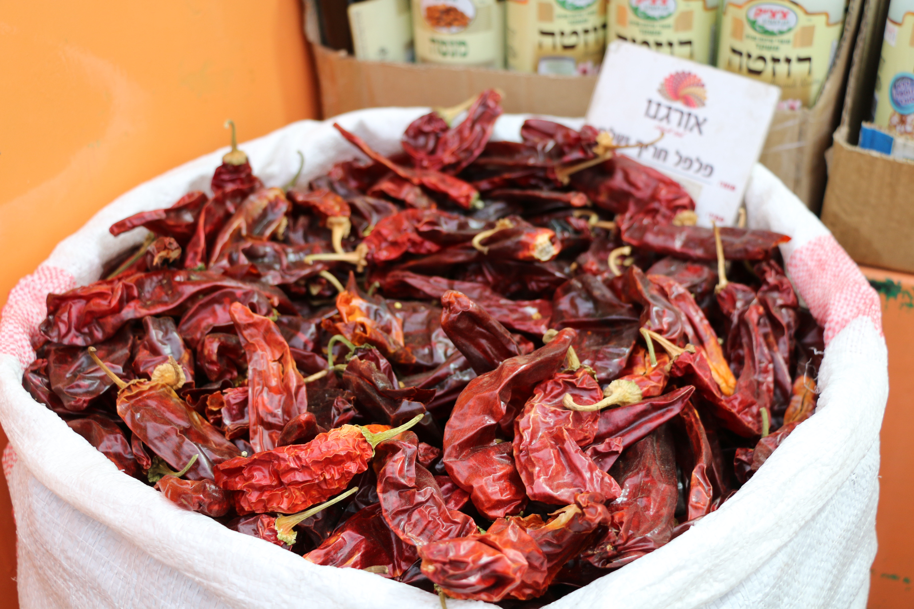שלושת תמונות האוכל (רימונים, לחם ופלפל שאטה) צולמו במחנה יהודה על ידי לירון טולידאנו